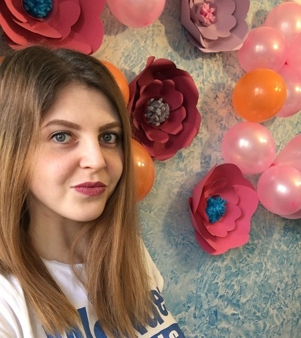

Я, студентка групи Ім-17, послуговуючись
на платформі , звітую про виконання таких робіт:
- Завдання 1 тижня. Створення простої сцени a-frame
- Завдання 2 тижня. Локалізація сцени та додавання текстур
- Завдання 3 тижня. Доповнена реальність: історія, теорія, методика
- Завдання 4 тижня. Віртуальна Сонячна система у A-Frame